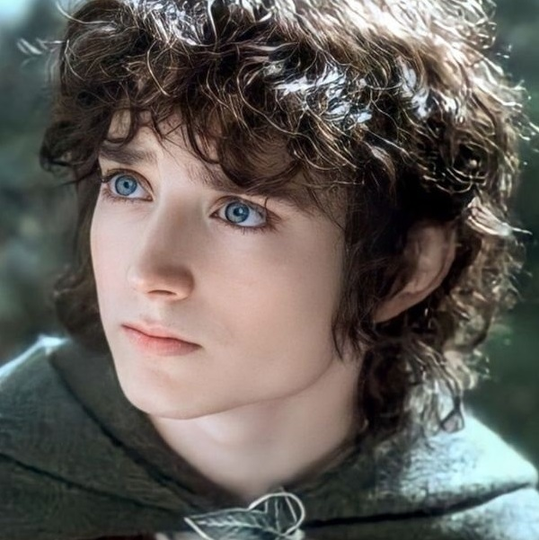
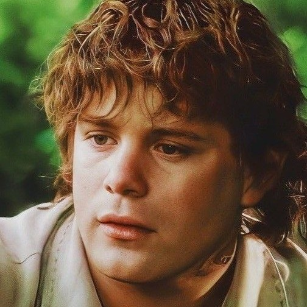
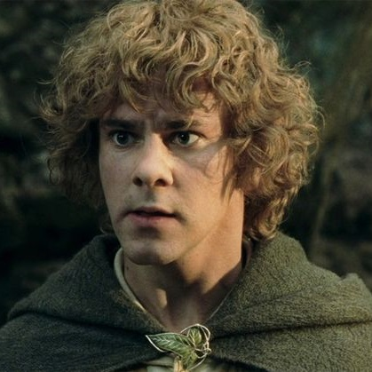
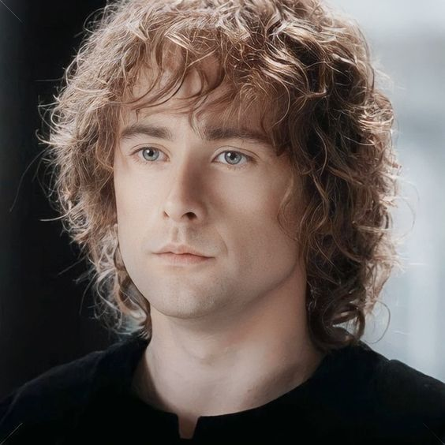
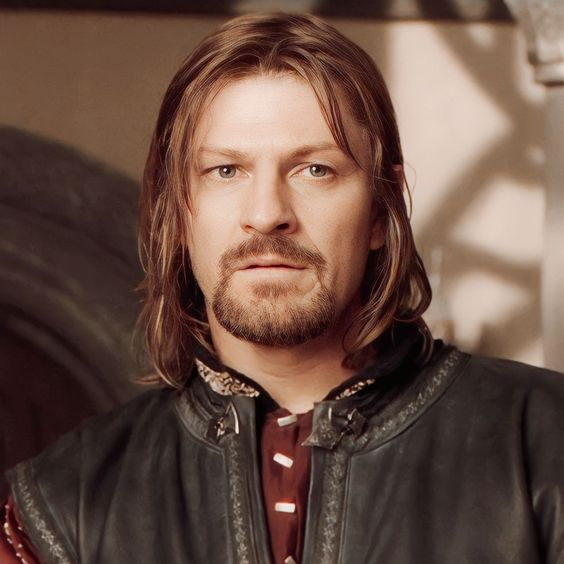
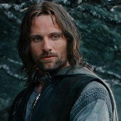
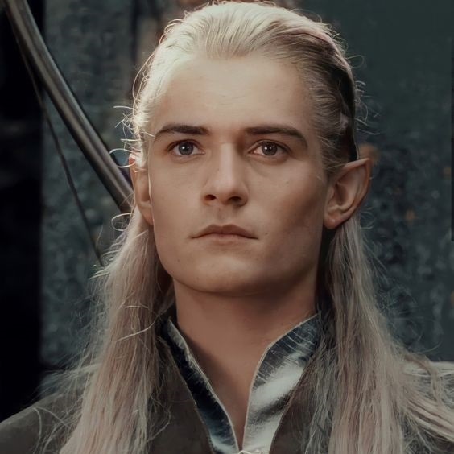
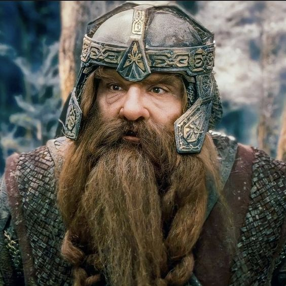
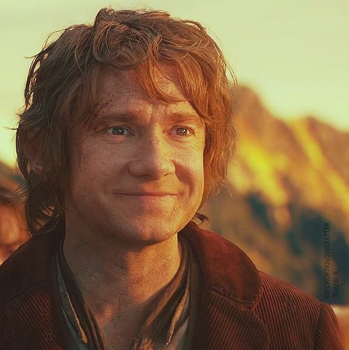
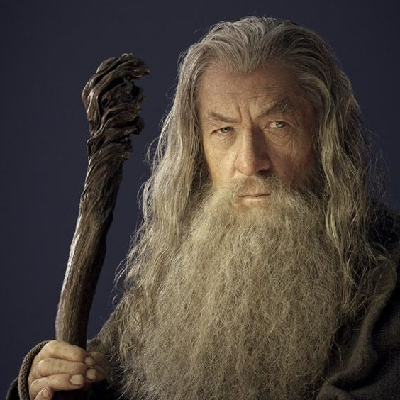

Frodo Baggins
Frodo Bolseiro é o nosso protagonista. Ele é um hobbit corajoso e determinado que assume a missão de destruir o Um Anel. Frodo enfrenta perigos inimagináveis enquanto luta contra a influência corruptora do Anel, revelando-se um herói relutante e resiliente no curso da jornada.

Samwise Gamgee
Samwise Gamgee, conhecido como Sam. E o melhor amigo e fiel companheiro de Frodo Bolseiro. Sam demonstra grande bravura, determinação e amor pelos seus amigos, mostrando-se um exemplo de virtude e lealdade ao longo da história.

Meriadoc Brandebuque
Meriadoc Brandebuque, mais conhecido como Merry, é um hobbit da Terra Média primo de Frodo Bolseiro. Merry é inteligente, corajoso e leal, contribuindo significativamente com sua astúcia e habilidades estratégicas durante a guerra contra as forças das trevas.

Peregrin Tûk
Peregrin Tûk, mais conhecido como Pippin, é um hobbit da Terra Média também é primo de Frodo Bolseiro. Pippin é conhecido por sua curiosidade e espírito brincalhão, mas também demonstra coragem e determinação, especialmente durante as batalhas contra as forças de Sauron.

Boromir
Boromir é um guerreiro humano de Gondor. Ele é filho do regente Denethor II e irmão mais velho de Faramir. Boromir é conhecido por sua bravura e habilidade militar. No entanto, ele é tentado pelo poder corruptor do Um Anel, o que eventualmente leva à sua queda.

Aragorn
Aragorn, é um guerreiro humano de Dúnedain. Ele é um descendente dos reis de Gondor e Arnor, com linhagem nobre dos Numenoreanos. Aragorn é um guerreiro habilidoso, estrategista e líder nato, conhecido por sua coragem, lealdade e compaixão. Na obra ele assume seu verdadeiro destino como o rei legítimo de Gondor e Arnor

Legolas
Legolas é um elfo da Floresta das Trevas . Ele é conhecido por sua destreza como arqueiro, agilidade e visão aguçada. Ele é retratado como um personagem nobre, valente e leal, cuja conexão com a natureza e habilidades como arqueiro são cruciais para o sucesso da missão contra as forças das trevas de Sauron.

Gimli
Gimli é um anão da Montanha Solitária. Ele é conhecido por sua coragem, força e habilidade como guerreiro. Ele é retratado como um personagem leal, orgulhoso de sua linhagem anã e determinado a provar seu valor em batalha. Gimli também desenvolve uma amizade especial com Legolas ao longo da história, superando antigas rivalidades entre elfos e anões.

Bilbo Bolseiro
Bilbo Bolseiro é o protagonista de "O Hobbit" e um personagem central na mitologia de J.R.R. Tolkien. Ele é um hobbit pacato e curioso que é arrastado para uma aventura inesperada por Gandalf, o mago, e treze anões liderados por Thorin Escudo-de-Carvalho.
Durante sua estadia na Montanha Solitária, Bilbo encontra o Um Anel, um artefato poderoso e maligno que o torna invisível. Esse encontro é crucial não apenas para "O Hobbit", mas também para os eventos posteriores em "O Senhor dos Anéis".
Durante sua jornada, Bilbo descobre sua coragem interior, enfrentando trolls, goblins, aranhas e o dragão Smaug para ajudar os anões a recuperar sua terra natal, Erebor. Ao retornar para casa, Bilbo é transformado pela experiência, demonstrando um espírito aventureiro e um profundo apreço pelo conforto de sua toca no Condado.

Gandalf
Gandalf é um dos personagens mais icônicos e influentes no universo criado por J.R.R. Tolkien. Ele é um Maia, uma espécie de espírito angelical enviado pelos Valar para ajudar na luta contra as forças das trevas em Arda (o mundo de Tolkien).
Gandalf é conhecido por sua sabedoria profunda, habilidades mágicas poderosas e papel fundamental na proteção e orientação dos povos livres da Terra Média. Como um dos Istari, ou Magos, Gandalf assumiu a forma de um velho sábio e viajante, conhecido por seu chapéu cinzento e cajado. Ele desempenha vários papéis ao longo das histórias de Tolkien, desde conselheiro e guia até líder militar e estrategista.
Gandalf é responsável por reunir e inspirar heróis como Frodo, Aragorn, Legolas e Gimli na luta contra Sauron e seu exército de Mordor.